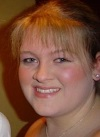

SHAD - University of Saskatchewan
What is SHAD?
SHAD is an award-winning enrichment and entrepreneurship program and network that empowers exceptional high school students – at a pivotal point in their education – to recognize their own capabilities and envision their extraordinary potential as tomorrow’s leaders and change makers. Each year, about 900 students from across Canada attend one of many Canadian host universities, with lectures, workshops, projects, and activities offered at every campus.
University of Saskatchewan
At the heart of Saskatoon, on Treaty 6 territory and the homeland of the Métis, is the University of Saskatchewan, one of Canada’s top research universities. The University of Saskatchewan happens to be one of SHAD's many host universities this year, and opens its doors to the 2018 SHAD alumni for a summer they will never forget.
Meet the team:
Program Director - Glyn Kennell
Program Manager - Vanessa Wiseman
BLOG
Check out what we've been up to!
First Day
Joel Roth
SHADs everywhere met their lifelong friends today. Here at SHADSask, today was a whirlwind of excitement and adventure. Most of us met in the airport and on the plane, but we weren’t really introduced until we met some of the program assistants (PAs) at the Saskatoon airport. They shuttled us to our month-long home once we picked up our suitcases, and gave us a short tour. Once that was through, we piled out of the shuttle vans, and checked in with the program manager, Vanessa, as well as the rest of the PAs and Teacher Fellows. They gave us our rec shirts, a room key, and a mysterious puzzle piece. Once unpacked into our rooms, we were ushered into the SHAD Lounge (Shloungé for short). There, we played cards while awkwardly introducing ourselves and trying to make conversation. Soon after that, lunch arrived and we were on our way into the rest of opening day. After lunch, we split up into teams and went on a campus-wide scavenger hunt. This hunt really gave us a chance to experience the beauty of the University of Saskatchewan, as well as an opportunity to learn some more about a few other SHADs. The architecture on campus is truly breathtaking, and the more modern buildings fit in perfectly among the hundred-year-old masterpieces. Once we were all through the scavenger hunt, we were assigned our roll call numbers, and told to go to dinner. Supper was our first meal at Marquis Hall, the meal hall on our campus. Oh man, was it a great dinner. The food here gets better and better as time goes on. So many cultures and food choices are available in the buffet, and we got to learn more about each other as we ate our meal together. We met up after dinner, and walked to the Engineering building where we met our Program Director, Glyn Kennell. He talked to us about what to expect from SHAD, saying that while we may not believe him just yet, SHAD would be a transformational experience in all our lives. After Glyn’s speech, we were split into our houses, given a theme (changemakers), and told to paint a flag. This was an excellent way for everyone to get to know the members of their house, and to start building their teamwork skills. After the flags were painted and the brushes cleaned, it was time for opening ceremonies. At SHADSask, this meant finishing a puzzle with our mysterious puzzle pieces from so many hours earlier, and writing down our biggest hopes and fears for the month. These were collected and stored for later use. We introduced ourselves to the entire group, and gave a one-word description of our current feelings. With that completed, we were sent back to residence, and promptly fell asleep. We had just begun Glyn’s infamous transformational experience, and none of us knew it.
First Design Projects
Roy Guo
The last couple days have been absolutely incredible! Although it hasn’t always been easy to be self-motivated to stay fully attentive and awake during lectures in the morning, the design projects presented to us in the afternoon always presents us an enjoyable challenge. Design projects typically present a problem that stresses core SHAD values such as creativity and community. Our first challenge was to build a non-standing device for people who are staying at shelters during natural disasters using only the materials provided: two pieces of cardboard and rivets. Initially, I began to think of different structures that are safe using the principles of physics and geometry, but to my surprise, there was much more than what I expected. In addition to designing and constructing a non-standing device, my group and I had to organize a formal business plan and a multi-step engineering report for the device that we built. This truly opened my eyes to the complex nature of reality as not everything is as black and white as just performing the task that is presented to me. For our second design challenge, we were presented with a more difficult task: to build a temporary shelter for survivors of a natural disaster. This time, I was much more prepared to plan a detailed and concise plan before jumping right into the project and constructing the first design that I think of. I worked very well with all my group members and we produced an exceptional product with a well-organized business plan, all in a reasonable amount of time.
An Enlightening Experience
Yue Yang Yu
Ever heard of a synchrotron? It’s x-hilarating (because it can emit x-rays)! Bad puns aside, the University of Saskatchewan is very fortunate to have the only synchrotron in Canada (The Canadian Light Source/CLS) on it’s campus! What is a synchrotron you might ask? In simple terms, it’s an enormous machine the size of several hockey rinks that creates light by firing electrons and accelerating them to near the speed of light with powerful electromagnets so that the electrons emit highly focused wavelengths of light from different spectra to study the interaction of light and matter with the samples that are prepared. On day three, all of the SHADs were fortunate enough to be given a tour of the synchrotron to learn how it works, ask questions, and also learn which studies it has contributed to. Being the only synchrotron in Canada and alluring scientists from all around the world to work on it, everyone was incredibly honoured and excited to take a deeper look into it. Not to mention having been given a lecture on it the day before, the excitement was palpable. I for one, was lucky enough to be chosen to work further with the synchrotron as workshop material because I bid a majority of my points towards it. Originally, the group that attended the workshop was supposed to organize a project and work with the synchrotron to realize it however, the luck was not on our ends and the synchrotron was unfortunately down for the time being that SHAD would take place. Unexpectedly, instead of being given further extensive tours on the synchrotron, the group was given an opportunity to work in the chemistry building of the university as well as the Saskatchewan Structural Sciences Centre (SSSC). This means that instead of performing an experiment with the synchrotron, the group of students would formulate an idea to experiment on, and use the equipment available to them from the alternative resources. Ultimately, the idea that was decided was to test how the degree of burning of food affects the levels of carcinogens. To further elaborate, because this year’s SHAD theme is resilience in Canadian communities in reaction to natural disasters, the food would be cooked over an open fire and the items selected were survival food (potatoes and canned sardines). After the samples were prepared: raw sample, cooked sample, burnt sample, charred sample, students were given the opportunity to do research over the course of an entire day on extremely expensive machines. Equipment such as the FTIR (Fourier-Transform Infrared Machine), NMR (Nuclear Magnetic Resonance Machine), XPS (Axis Sapra), and GC-MS (Gas Chromatography Mass Spectroscopy) were used. Not only did we complete our research, we identified conclusions from it: through the analysis of our results, we can support the statement that the levels of carcinogens such as acrylamide and polycyclic aromatic hydrocarbons rise as the starch based foods such as potatoes become charred. Additionally, we presented to several professors, CLS staff, and even the president of SHAD: Tim Jackson at the CLS building during a 45 minute PowerPoint presentation and Q&A. Undoubtedly the Canadian Light Source has been an incredibly unique and educational experience for all the SHADs.
Camping Trip
Cecelia Roy
As you may know, SHAD is an academic enrichment program geared towards STEAM principles. But SHAD exposes us to so much more than sciences and maths. This program is not confined to academic growth, it also allows us collaborate and build close relationships. Much of this is done through weekend trips, our very first one being a three day camping expedition. The first day was absolutely beautiful. Even before we reached the camp site, we sang on the bus, we talked and hiked. After we reached our destination, our groups set up tents, it was hilarious as only a few SHADs knew what they were doing. However, it was the evening that was most memorable. We had one fire, and all 63 of us squeezed around it. We took turns allowing skewers with marshmallows and hot dogs into the flames. We were comfortable in each other’s company and the warm night masked the first few drops of the oncoming thunderstorm. We gave up our scented items to the PA’s and were in our tents by 10:30. It was 8 to a tent, so I sat on a bench by the tent watching Netflix. I must’ve fallen asleep as I was woken by screaming! “The towel moved!” A girls voice yelled. Turns out I was the towel, more accurately, it was my XL hoodie. But that was the signal for me to head into the tent, it had been a long and exciting day. But it wasn’t over. We were woken once again, this time it was rain and lightning. We heard the footsteps of the PA’s outside. “Squish into the middle of the tent, it will help you stay dry!” We listened and made sure nothing was touching the walls of the tent. We were scared and uncomfortable that night,and were forced to rely on each other for comfort. But it was okay, because every one of us had comfort to give. The next morning, the storm was completely over, and we joked about the night at breakfast. Day 2 was once again filled with outdoor activities. We swam in a crystal clear lake, we canoed, and best of all, we hiked for 5km. The weather was perfect, and the animals in the area knew it too. That day we saw deer gallop and dragonflies swarm like fairies in a Disney movie. The days went by so fast but what I remember is as clear and vivid as that lake.
Downtown Day
Harrison Gao
There’s nothing that is able to make a Saskatchewan SHAD feel as many butterflies in their stomach as hearing about a special activity that’s supposed to take place the next day. This Saturday was especially amazing for us because we spent the entire day and afternoon exploring downtown Saskatoon! The weather was beautiful, a slight breeze under the brilliant blue sky and everyone was bubbling with excitement as we crossed the picturesque university bridge. Conversation flowed as smoothly as the calm waves of the river that morning and soon we were off on our very own adventure throughout the quaint city Downtown Day (what we call this lovely adventure) was full of fun options on where to spend your day. The fresh and natural farmer’s market was filled with amazing organic foods and the locals tastes of the area. To sweeten the deal, there was also the incredible Remai Gallery which was filled with Picasso and Durham pieces. There was also a mall, beautiful city landmarks and the amazing shore along the river to mention a few of the wonders in this city. Plenty of SHADs were spotted with their friends trying on stylish new clothes (thanks to some great sales) and chatting at the food court over some food. As much fun as the city was, SHADs always remained respectful and the locals who came into contact with them were pleased to welcome them into their city. At the end of the day, music was played on speakers as we took in the view one more time before heading back to Qu’appelle hall, but we just call it home now.
Workshops
Katherine Mader
Over the past three weeks, SHADs at the University of Saskatchewan have had the opportunity to participate in several engaging and informative workshops. There had been two three hour workshops, and two six hour workshops that occur over the course of two days. Students were each given one hundred points which were used to bid on their desired workshops. A variety of workshops were offered ranging from dance to 3D printing and laser cutting to astrobiology and even an opportunity to conduct research at the Canadian Light Source (CLS), here in Saskatchewan. One of the first workshops offered was during a three hour time slot and focused on the art and technique of cyanotyping. Led by Rick, one of the coordinators here at SHAD Saskatchewan, this workshop allowed students to learn about the process of creating prints by exposing ferric ammonium citrate and potassium ferrocyanide to UV rays produced by the sun. Students were able to create their own prints using several different media including a selection of paper and cloth. Each student was able to design their own custom t-shirt in addition to several paper prints. There was a large range of designs, all of which utilized objects found either in nature (flowers, branches, leaves) or in the Hardy Lab (screws, bolts, wires, etc.) where the workshop was conducted. One of the second workshops offered was blacksmithing. This was a six-hour workshop, split into two three-hour chunks of time. Students who participated in the workshop were taken off campus and brought to the home of Ellens’ parents, Alison and Pat, who are the owners of a forge and a blacksmithing shop. Upon arrival, participants were greeted with lemonade and homemade cookies, courtesy of Alison. After being given a brief tour of the property, the students were introduced to the hand tools and safety gear they would be using whilst creating their own blacksmithing projects. Each student had the opportunity make a bowl from the process of placing pre-cut shapes/designs onto a stump with a portion of wood carved out and using a hammer against the wood in order to shape the piece of metal into a desired look. Additionally, SHADs were able to create their own custom rings, fashioned out of thin strips of metal which then cut, filed, shaped, and polished, ultimately giving the rings a professional feel. With the assistance of Pat, the students were also able to create either a trivet or a trowel using the forge. After the bowls and forging projects were complete, a protective coat of beeswax was applied to help preserve the condition of the metal and prevent any rusting that may occur. The third workshop was a three-hour workshop with one of the activities offered being cardboard boating. Students participating in this workshop were split into four teams and given one hour to design and construct a boat required to support the weight of one individual in an aquatic environment. The materials and tools available for students to use during this design process were four rolls of duct tape, two relatively large cardboard boxes, an X-Acto knife, and a pair of scissors. Each team successfully were able to create a boat during the allotted time period, with each design displaying features unique to the needs of the paddler. After creating their boats, the SHADs headed over to a swimming pool on campus and tested their designs by means of a race. An admirable effort was made by each team during the race, with each paddler demonstrating perseverance despite technical difficulties and leaks making each stoke a struggle. One team was able to successfully complete a length of the pool before water damage caused the boats to sink. Following the race, SHADs enjoyed a swim in the pool. The fourth and final round of workshops offered a pinball workshop. Two guests from the University of Saskatchewan were kind enough to bring in their own personal pinball machines from their home and allow the participants of the workshop to analyze the inner workings and wiring inside each machine as well as participate in a pinball tournament. Following this, students split into two groups and had the opportunity to create their own manual pinball machine. With the use of nails, a spring, elastics, and laser cut wooden designs and some power tools, each group was able to create a unique and functioning pinball machine. One group created a Monsters, Inc. themed pinball machine, while the other designed one based off of the world cup. Overall, the students greatly enjoyed the whole pinball experience offered to them throughout this workshop and a few even mentioned that they might look into joining a pinball team once they return home from SHAD.
Gotcha!
Harrison Gao
That two syllable word is enough to strike fear into the hearts of any SHAD at Sask. Gotcha! is the name of a little game that is on 24/7. The premise of the game is that you are given a slip of paper with someone's name on it and a word beside their name. The goal is to make your target (another fellow SHAD) say the word, if you succeed your target must give you their slip of paper and their target becomes yours. After hearing them say the word, you would have to tell them Gotcha! Through this game, plenty of new conversations were initialized and it allowed the SHADs to meet new people or talk to them (even if for the purpose of getting them out). After someone has been gotten out, a plentiful amount of cheering and screaming is usually heard, most people just laugh it off after and hug it out. In all ways, we were brought together by the absurd ways we'd get out and all of us reconciled merrily afterwards. SHADs started to get creative with their tactics. Some very notables tactics were: Before taking a picture, someone would yell “everyone say limestone (one of the words)” and afterward you would heard a loud GOTCHA! and plenty of laughter. People played Simon Says and even created repeat after me songs for everyone to sing at the campfire. SHADs also played songs with lyrics that were their target’s word and watched their target sing along and knocked them out. It was a fun game for those who won and lost because losing was in its own way a relief. On multiple occasions, now that the person out was no longer in the game they'd help the person who got them and work as a team in getting their targets. Plenty of inside jokes and playful teasing were created because of this game and long-standing memories too. After the first game ended, the winners were celebrated and given an advantage and the second round began! People played at all time like before, some people even got out at times such as the sunrise hike at 3am. All in all, Gotcha! will be one of the great memories we share together and we will never stop laughing about how and who got out.
SHAD Sask Olympics
Joel Roth
When we woke up today, no one was expecting such an amazing activity to be waiting for us. After breakfast and announcements, we were greeted with a surprise that not a single SHAD saw coming: today would be the SHAD Sask Olympics. We were quickly split up into our teams, based on our rec groups. Purple and grey banded together to become the Narwhales, blue and black transformed into the Big Bang. Yellow and orange converted into Team Citrus, and green and red were the Watermelons. We spent almost an hour making our flags and creating a chant, and then came opening ceremonies. We paraded to the bowl and performed our chants for the other teams. After much excitement, the games began. First up were the field sports: hula-hoop discus, archery, javelin, and yoga-ball shotput. After an intense hour, we transitioned into a pool noodle hockey tournament, but there was a twist: every court had two balls, and no one could play goalie. After many competitive and challenging rounds, we all mellowed out with ring toss. One team member would lie down on the grass with their feet in the air, and the rest of the team had to toss hula-hoops onto their legs. This continued for awhile, until it was time for our final event before lunch, the limbo tournament. All 62 of our SHADs lined up to see how low they could go. Before long, it was down to the final 10, then the final 4, until we had crowned our winner, somehow fitting underneath a pole that was barely 3 feet off the ground. After a hurried lunch, it was time for round two of our Olympics. We started off with pool noodle hurdles, a very competitive and completely silly event that was my personal favourite of the entire day. We had to partner up, run to a specified location, and set up a hurdle for the rest of the partners to go over. This continued until we had all set up our hurdles, at which point the first pair would jump over the remaining hurdles until they had reached the end. This continued until we were all on one side of the field, and it was time to do it all over again in reverse. The first of the two teams to go across the field and back won the event. Subsequently, we transitioned into the bucket-filling relay tournament. All the teams had to use sponges to fill their bucket with water, but the sponges had to be carried above our heads, simply for that extra added challenge. With that activity completed, the Olympics were drawing to a close. Closing ceremonies consisted of a dance challenge, where each of the teams had 15 minutes to create the best dance possible to any song of their choice. After creating them, we performed them for each other, and the SHAD Sask Olympics were over for another year. Perhaps you noticed that I never commented on the scores of any team. This is simply because SHAD is not about competition. It never was, and it never will be. Today was a special break from our academic studies. The only point of it was to let the SHADs have a relaxing and fun day away from the tough SHAD programming. I personally believe that this goal was met today, and I know that many of the other SHADs would agree with me.
Wanuskewin: From Cooking Bannock to Dancing in Panic
Jennifer Chen
The 20th of July was an unforgettable day for the campers of SHAD Saskatchewan, although they wouldn’t know this as they headed into the bus that would take them to an unknown destination. I was hit with mixed emotions as we first arrived at Saskatoon’s Wanuskewin Heritage Park. At first glance, it looked like an ordinary park, but soon we would realize it was so much more than just that. Since the 1980s, Wanuskewin Park has been preserving Aboriginal culture in Saskatchewan. We had the opportunity to explore this unique culture throughout the day, first as an Indigenous tour guide taught us how to make bannock, which is a type of bread hand-made by the Aboriginal people. We roasted the dough by a fire; although my dough (and the dough of many other SHADs) didn’t have time to fully cook, the bannock was still delicious, especially paired with jam and butter. Next, we went on a medicine walk through the forested park, where we had the opportunity to learn about various plants from the area and their uses. We even got to taste plants native to Saskatchewan like juniper and licorice; however, they tasted quite awful in my honest opinion. The medicine wak was also a chance for us to learn about the lifestyle of the native people, such as how they built teepees, hunted bison, and told traditional stories in the wintertime. Finally, we gathered in an outdoor amphitheater to watch a performance by a Cree dancer. I loved his outfit of vibrant red, yellow, white and black, complete with bead jewelry, eagle feathers, and a headdress of porcupine fur. The pounding drum music was ardent and enlivening, bring the performer’s dance to life as he told the story of an Aboriginal warrior through movement and sound. Soon, some SHADs joined in on the dancing, feeling anticipation and perhaps even panic as they were first put into the spotlight. But in no time, the SHADs were letting their creativity and energy flow as they imitated the Aboriginal dancer in a form of art many of us had never seen before, though some of them looked like they had no idea what they were doing. One of the most important things about our trip was getting to interact to our Aboriginal tour guides and performer. We were taught about some of the struggles faced by Indigenous community, such as isolation, stripping of cultural identity, and substance addiction. We learned so much about the how factors such as residential schools and alcohol abuse damage generations of Indigenous families in a vicious cycle that is almost impossible to stop. On our way back to campus, we reflected on our experience on one of Saskatchewan's most beautiful and culturally significant heritage sites.
CONTACT
Fan? Drop a note!
Phone: (306) 966-4343
Email: SHADSask@gmail.com